🔮 Class changes¶
Updated: November 9, 2026.
This is the consolidated reference for the server's implemented class changes. Values below describe the final settings, including later corrections and selected per-level curves. Ordinary targeting, resource, immunity and map restrictions continue to apply unless a change explicitly overrides them. Base skill delays are still subject to the server's normal delay rules and 100ms minimum; a fixed cooldown is identified separately.
For rates, caps and the definition of a natural MVP map, see server rules. For shared convenience systems, see quality of life.
Browse the class directory to jump directly to your class. Skill icons use the artwork mapped by this client, including reused artwork for custom skills.
General combat and status effects¶
| Feature | Current behavior |
|---|---|
| Party buff animations | Other recipients in the caster's party receive the effect and floating skill name without being made to play the recipient casting animation. The caster retains the normal animation, casting time and after-cast delay. |
| Reflected damage | Reflected damage is capped at the reflecting user's Max HP per incoming hit. Applicable equipment and skill reflection components share the cap. |
| Safety Wall and reflection | A player protected by Safety Wall cannot trigger skill-based reflection, including from the hit that consumes the final wall charge. Equipment reflection follows its normal eligibility and the Max HP cap. |
| Warp Portal | Cannot be created on natural MVP maps, including while the MVP is dead. Existing destination and memo restrictions remain. |
| Dispell and songs/dances | A successful Dispell can remove lingering song/dance effects after the target leaves their applicable active area. A matching active area still protects the effect. |
| Please Don't Forget Me | Removed on death. An active dance can apply it again after resurrection. |
The party animation change covers Angelus, Magnificat, Gloria, Wind Walk, Adrenaline Rush, Full Adrenaline Rush, Weapon Perfection, Over Thrust, and the Blessing, Increase AGI and Assumptio scroll skills. It does not remove the caster's skill delay.
The Dispell change covers Whistle, Assassin Cross of Sunset, Poem of Bragi, Apple of Idun, Humming, Please Don't Forget Me, Fortune's Kiss and Service for You. Other Dispell resistance and immunity rules remain.
Knight / Lord Knight¶
| Skill or feature | Current behavior |
|---|---|
| Berserk: items | Fly Wing, Novice Fly Wing and Infinite Fly Wing can be used. Other items remain blocked by Berserk. The wings still obey ordinary teleport and item-use restrictions. |
| Berserk: chat | Normal chat and whispers work. Mute and other ordinary chat restrictions still apply. |
| Berserk: visuals | The native red-body effect persists through Fly Wing teleports. The existing Berserk cast sound and an additional magic-circle aura are supported. @settings controls visibility of the character's own additional aura. |
| Concentration with Berserk | If Lord Knight Concentration is already active when Berserk starts, it refreshes to 2.6 times its normal full duration. It ends at that deadline or when Berserk ends, whichever is earlier. Berserk does not grant Concentration if it was absent. |
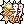 Bowling Bash |
Gutter lines no longer determine whether the second attack occurs. Each selected primary/chain target receives two normal damage attempts, including near walls or with knockback immunity. Native hit, defense and immunity checks still apply. |
Concentration's refreshed durations at Levels 1-5 are 65 / 78 / 91 / 104 / 117 seconds. This is Lord Knight Concentration, not the Archer skill Improve Concentration.
The red body uses the normal Berserk status lifecycle. The optional magic-circle aura is a separate visual; hiding it does not change the buff's effects.
Infinite Fly Wing is an explicit QoL item addition. It is reusable and retains its item movement restrictions; this change does not add it to shops or monster drops. Mercenary Bowling Bash retains its native behavior.
Crusader / Paladin¶
| Skill or feature | Current behavior |
|---|---|
| Shield swapping | Swapping directly from one valid shield to another preserves Auto Guard, Defender, Reflect Shield, Shrink and Reflect Damage. Removing/stripping the shield or replacing it with a weapon ends shield-dependent buffs. |
| Devotion: guild rule | Outside Battlegrounds, caster and target must belong to the same nonzero guild. Battlegrounds bypass only this added guild requirement. Native party/team, level, range and link-slot requirements remain. |
| Devotion: display | The caster and protected recipient both see the Devotion icon. The caster's icon is display-only. Protected recipients show + in the party menu. |
| Grand Cross | Three cast-wide waves at 300ms intervals over the native 900ms ground duration. Stacked targets receive full damage on every available wave. Moving between cells cannot add extra waves. Late arrivals receive only the remaining waves. |
| Grand Cross: HP leech | Native weapon HP/SP drain dispatch is retained, allowing effects such as Hunter Fly when their normal proc conditions are met. Self-damage and zero damage do not leech. |
| Holy Cross | Its full damage ratio doubles with a two-handed spear. Level 10 becomes 900% instead of 450%. Other weapon types do not gain this bonus. |
| Shield Reflect | Skill-reflected damage does not affect Boss-flagged monsters, including Boss-flagged mini-bosses. Equipment reflection is separate. |
The shared reflection cap and Safety Wall restrictions also apply. Multiple Devotion links keep the caster's icon until the last valid link ends.
Mage¶
| Skill | Current behavior |
|---|---|
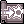 Napalm Beat |
Splash damage is not divided between targets. Each valid target receives its independently calculated full damage in the existing 3x3 area. |
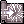 Soul Strike |
The existing Undead-only bonus becomes 7% MATK per skill level. At Level 10, the base per-hit ratio is 170% against qualifying Undead targets and 100% otherwise. |
Soul Strike's bonus is not a new bonus against every target. Its native Undead-detection rules, hit progression, element and costs remain.
Wizard / High Wizard¶
| Skill | Current behavior |
|---|---|
| Ice Wall | Cannot be cast or placed on natural MVP maps, including while the MVP is dead. |
| Magic Crasher / Stave Crasher | Against monsters, ignores 75% of hard DEF and doubles the resolved damage once. VIT-based soft DEF remains. It retains MATK-based physical damage, weapon element, cards and endows/converters. |
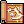 Sightrasher |
Walls and obstacles block it, except on Biolabs 3 and 4: lhz_dun03 and lhz_dun04. |
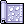 Storm Gust |
Exact 10x10 damage footprint on open ground, from offsets -4 through +5 on each axis. Normal walls, boundaries and Land Protector can still exclude cells. |
Magic Crasher's new doubling and DEF piercing apply to monsters only. Player damage and the native miss, plant and immunity rules remain. Storm Gust retains its interval, freeze behavior, duration, damage and other casting properties.
Sage / Professor¶
| Skill | Current behavior |
|---|---|
| Abracadabra | Blocked on town-flagged maps. Preparing a result elsewhere does not bypass the town restriction. |
| Auto Spell | Offers Fire Bolt, Cold Bolt, Lightning Bolt and Earth Spike from Auto Spell Level 2. Frost Diver is removed from the list. Elemental triggers use the highest learned level within the tier limit below. |
| Create Elemental Converter | Quantity prompt supports 1-300 converters per batch; 0 cancels. Each converter consumes the original recipe, including one Blank Scroll. |
| Mind Breaker | Reduces hard MDEF outside GvG/castle maps. On GvG/castle maps it retains the original soft-MDEF reduction, including outside an active siege. The receiver gets a debuff icon and updated stats. |
Auto Spell tiers¶
| Auto Spell level | Maximum elemental trigger level |
|---|---|
| 2 | 1 |
| 3 | 2 |
| 4-10 | 5 |
Without Sage Spirit, the triggered elemental spell is capped by its learned level and the tier. Earth Spike triggers at Level 5 under Sage Spirit once learned. The native Sage Spirit boost for the other three bolts remains. Non-elemental choices retain their native availability and level variation.
Proc chance remains 5 + 2 x Auto Spell level percent, and the native two-thirds SP cost remains. Auto Spell duration uses the Auto Spell skill level.
Mind Breaker keeps its existing reduction amount of 12% per level, MATK increase of 20% per level, and ordinary success/immunity rules. Battlegrounds use hard MDEF unless also flagged GvG. Changing maps recalculates the appropriate component.
Merchant / Blacksmith / Whitesmith¶
| Skill or feature | Current behavior |
|---|---|
| Cart Revolution | Always uses full-cart damage: 250% ATK. |
| Change Cart 2 | Free platinum unlock from the Platinum Skill NPC. Adds Change Cart Level 2 and restores it after resets. Use @cartstyle with a cart attached to select styles 1-12. |
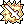 Mammonite |
Carrying Bag of Gold Coins caps the final Zeny cost at 500z. Avarice removes the cost entirely. |
| Vending | Closing the shop shows quantities sold, actual Zeny credited after tax, and remaining cart contents. The vendor system adds same-account offline shops, searches, last-shop import and @vendrecap. |
| Adrenaline Rush | Also supports one-handed swords. |
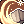 Cart Termination |
Uses the full 8,000-weight reference regardless of actual cart weight. Costs 0z in Battlegrounds, 500z with the bag, or 0z with Avarice. |
| Power Thrust / Over Thrust | Adds no weapon-break chance. |
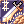 Maximum Power Thrust |
Adds no weapon-break chance and preserves its remaining duration through logout. |
| Melt Down | Instant cast, 50 base SP at every level, duration scaling from 25 seconds at Level 1 to 150 seconds at Level 10. See its PvE debuff below. |
| Repair Weapon | Also repairs armor using one Steel. Native weapon-repair material and range requirements remain. |
Bag of Gold Coins and Avarice¶
Bag of Gold Coins (#670) is sold by Gold Coin Steward, geffen_in 100,174, for 50,000,000z. It weighs 500.
- The bag must be in inventory to provide its discount.
- Only one purchased bag is allowed per character; storing it does not permit another purchase.
- Personal storage is allowed, but the purchased bag remains bound to its owning character for withdrawal.
- It cannot be dropped, placed in a cart, traded, mailed, auctioned, sold to an NPC or placed in guild storage.
A Whitesmith can permanently exchange the bag plus 200,000,000z at the same NPC for Avarice, a passive platinum skill. Avarice removes both Mammonite and Cart Termination Zeny costs without carrying the bag. The unlock survives resets and is restored through the relevant login/NPC/reset handling.
Forging¶
| Forging condition | Bonus |
|---|---|
| 1 Star Crumb | +20 weapon ATK |
| 2 or 3 Star Crumbs | +60 weapon ATK |
| 2 Star Crumbs plus elemental stone | Also +10% physical damage when the attack uses that forged element |
| 3 Star Crumbs, neutral weapon | Also +10% neutral physical damage |
| Top-ranked Blacksmith's forged weapon | Additional +10 weapon ATK |
The new weapon ATK replaces the former Star Crumb post-DEF mastery contribution.
Melt Down in PvE¶
Successful normal attacks and damaging skills, including Cart Termination, apply a five-second debuff that reduces the monster's ATK and both DEF components by 35%. Further hits refresh it. MVPs are excluded; mini-bosses remain eligible. The previous chance-based monster Strip effects do not stack with this replacement. Native PvP weapon/armor breaking remains.
Fame decay¶
Blacksmith/Whitesmith, Alchemist/Creator and ranked Taekwon fame decay by 5% on the first day of each calendar month in Philippine time. Missed months are processed individually, rounding down each month. Establishing an initial month baseline does not deduct fame. The shared monthly system includes online-save safeguards and offline catch-up.
Alchemist / Creator¶
| Skill or feature | Current behavior |
|---|---|
| Fame | Uses the shared 5% monthly fame decay. |
| Bio Cannibalize: limits | Flora/Parasite/Geographer limits are 6/4/2 outside PvP, Battlegrounds and GvG; competitive maps retain 3/2/1. Other plant limits and mixed-plant restrictions remain. |
| Bio Cannibalize: HIT | Plant HIT uses plant level plus the owner's battle DEX, except on GvG maps, which retain native plant DEX. |
| Bioethics | Active, zero-SP platinum skill opening a roster of up to four owned homunculi. Rest the selected homunculus first. Swapping to a stored homunculus costs one Embryo. |
| Call Homunculus | Calls the most recently selected homunculus. Creates a new one through the native one-Embryo path only when no selection exists and the roster has space. |
| Lif: Mental Change | Five-minute skill-specific cooldown at every level. Removing the active effect through teleport/map change clears its cooldown; normal expiry or Rest does not. |
| Plant Cultivation | Blocked in the configured town-building list, including inns, shops and guild halls. Outdoor towns are not automatically blocked. |
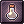 Twilight Alchemy |
One visible skill; up to 300 attempts of an available Create Potion recipe. No cast time; shared two-second cooldown. One eligible recipe is selected automatically; multiple recipes open a selector. |
Stored homunculi retain their names, levels, EXP, stats, skills, intimacy and hunger. The selected one is excluded from Bioethics' stored-choice list. Parking it can free the selection to raise another, up to four in total. Native creation remains random and duplicate types are permitted. Swap failures refund the Embryo through the protected swap process; permanent deletion remains permanent.
Mental Change's remaining cooldown is saved through logout/storage. Its ordinary effect duration and end-of-effect HP/SP loss remain.
Twilight Alchemy retains 200 SP, the Alchemist Spirit requirement, normal Pharmacy success formulas, recipe ingredients, one Medicine Bowl per attempt, required books and fame rules. The former Super Novice/Taekwon partner requirements are removed. Attempts are limited by available materials and carrying capacity.
Priest / High Priest¶
| Skill or feature | Current behavior |
|---|---|
| Mace attack speed | Base attack delay for mace and two-handed mace is reduced by 10%, from 600 to 540. High Priest and Baby Priest inherit it. |
| Aqua Benedicta | Automatically creates the largest safe batch, up to 300 Holy Water, consuming one Empty Bottle per output. Retains the water requirement and 10 SP per cast. |
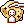 Impositio Manus |
Keeps +5 weapon ATK per level and adds +1% MATK per level, up to 5%. Only the new MATK component is disabled on GvG/castle maps. |
| Mace Mastery | Keeps +3 ATK per level and adds +1 displayed critical per level while using a mace or two-handed mace. |
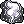 Magnus Exorcismus |
Also damages Undead-race, Shadow-element and Ghost-element monsters. Existing waves continue while the caster is Stunned, Frozen or Petrified. |
The Magnus Exorcismus change does not permit starting a cast while incapacitated. The 190 ASPD cap still applies.
Monk / Champion¶
Asura Strike: the five-minute natural SP recovery penalty clears on actual logout. The separate increased-sitting-recovery penalty is session state and also resets on relog. Teleporting does not clear the active penalty. Other recovery restrictions remain.
| Skill | SP costs by level |
|---|---|
| Chain Crush Combo, Levels 1-10 | 2 / 3 / 4 / 5 / 6 / 7 / 8 / 9 / 10 / 11 |
| Glacier Fist, Levels 1-5 | 2 / 3 / 4 / 5 / 6 |
| Raging Palm Strike, Levels 1-5 | 1 / 2 / 4 / 6 / 8 |
| Raging Quadruple Blow, Levels 1-5 | 2 / 4 / 6 / 8 / 10 |
| Raging Thrust, Levels 1-5 | 2 / 4 / 6 / 8 / 10 |
Spirit-sphere costs remain unchanged.
Thief / Assassin / Assassin Cross¶
| Skill | Current behavior |
|---|---|
| Pick Stone | Works while overweight, including above the ordinary 90% casting threshold. Normal capacity remains; native overflow can place the stone on the ground. |
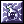 Create Deadly Poison |
10 SP per cast; automatically attempts the largest safe batch up to 300. Failures no longer remove HP. Ingredients are consumed per attempt and native success chances remain. |
| Enchant Deadly Poison | Levels 1-5 last 60 / 67.5 / 75 / 82.5 / 90 seconds. Remaining duration persists through logout. |
| Venom Dust | No Red Gemstone requirement. |
Create Deadly Poison still requires all seven native ingredients and appropriate inventory capacity. Partial production successes are retained.
Venom Knives are available for a base 50z at every Enhanced Tool Dealer, including the inn dealers. The shared catalogue replaces the previous Tool Dealer stock across the world.
Rogue / Stalker¶
| Skill | Current behavior |
|---|---|
| Backstab | Can be used from any direction. Does not reposition the caster or force the target to turn. Uses ordinary HIT/FLEE checks and a fixed 333ms cooldown. The former 500ms after-cast delay is removed. |
| Chase Walk | STR bonus begins after five seconds. Normal SP drain still begins at ten seconds and continues at native intervals. |
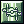 Plagiarism |
A higher-level eligible copy can upgrade the same copied skill or temporarily override a lower normally learned level. Equal/lower offers do not downgrade it. Native copy protections remain. |
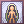 Preserve |
Infinite duration, on/off toggle, persists through logout. Toggling off uses native zero-cost handling. |
The Plagiarism Tutor at prontera 132,200 offers the current eligible Plagiarism skills for 25,000z per lesson. The offered level is capped by Plagiarism and the selected skill's maximum. Preserve blocks lessons. Redundant, invalid or failed lessons do not charge the fee.
Backstab retains its native damage, range, bow penalty, SP cost and Hiding removal. Its fixed cooldown ignores equipment cooldown modifiers and the ASPD casting gate; other skills' delays still apply.
Bard / Clown and Dancer / Gypsy¶
| Skill or feature | Current behavior |
|---|---|
| Weapon swapping | Replacing a weapon cancels the active performance, including swapping to another instrument/whip of the same type. Normal lingering recipient effects remain. |
| Arrow Vulcan | Two-second base after-cast action delay at every level. This is not a new fixed cooldown. |
| Loki's Veil | Blocked on natural MVP maps, including while the MVP is dead. |
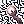 Wand of Hermode |
Can be performed solo. Retains its native instrument/whip requirement, SP cost, duration and portal-proximity check. |
Armor, shield and ammunition changes do not trigger the weapon-removal cancellation rule. The shared Dispell and Please Don't Forget Me changes are described under general status effects.
Super Novice / Super Baby¶
These changes apply to classic Super Novice and Super Baby, with Base 99 / Job 70 and the 190 ASPD cap.
| Feature | Current behavior |
|---|---|
| Death count | Lupita resets it for free, recalculating the native Job-70 deathless +10-all-stats bonus. The reset also grants a ten-second Level-5 Super Novice Spirit link. |
| Doridori | While sitting, doubles normal HP/SP recovery and applicable normal recovery-skill ticks. Displays an icon and ends on standing, death or logout. |
| Weight | Additional 2,000 displayed weight capacity. |
| DEX | Ten additional DEX beyond native job bonuses: +1 at Job Levels 5, 10, 15, ..., 50. |
| ASPD | 10% lower base attack delay with all weapons, before ordinary AGI/DEX calculation and the 190 cap. |
| Removed tree skills | Blessing, Increase AGI, Enlarge Weight Limit, Identify, Owl's Eye and Transcendence. Paid learned levels in applicable removed skills are refunded once; freely granted levels are not refunded. |
Doridori does not double the fixed 3%-per-1.5-second sitting QoL recovery; eligible percentage pulses replace ordinary sitting ticks. Lupita's short Spirit link retains the normal equipment eligibility requirements.
Fury chant¶
At exactly 10%, 20%, ..., 90% Base EXP, say either the original three messages in order or the complete chant as one exact message. Replace <name> with the character's actual name:
Dear angel, can you hear my voice? I am <name> Super Novice~ Help me out~ Please~ T_T
The chant cannot renew an already active Fury.
Free platinum skills¶
Collect these Level-1 skills from the Platinum Skill NPC at prontera 128,200. The unlock survives skill resets/login. Changing away from Super Novice/Super Baby removes these class-specific grants and active statuses, while retaining the unlock for a later return.
| Skill | Current behavior |
|---|---|
| Angel, Help me! | 100 SP, instant cast, 1s after-cast delay, 300s cooldown. A moving 15x15 area checks the caster and living party members each second for 20 seconds, restoring a base 500 HP and 100 SP per pulse. Normal healing modifiers/restrictions apply. Stops on death/logout. |
| Breakthrough | Passive: +50 ATK, +50 MATK, +2,000 Max HP, +200 Max SP and +20% incoming HP-healing skill/potion bonuses. Does not increase SP-potion recovery or natural/percentage regeneration. |
| Super Blessing | Target yourself or another living player within nine cells. Grants Level-10 Blessing and Increase AGI for 240 seconds. Costs 50 SP, casts instantly and has a 1s after-cast delay. Uses both normal buff effects and Blessing's sound. |
Super Blessing refreshes the ordinary Blessing/Increase AGI statuses; it does not stack another copy of their bonuses with skills or scrolls.
Taekwon¶
| Feature | Current behavior |
|---|---|
| Fame | 5% decay on the first day of each Philippine calendar month, including Baby Taekwon. |
| Taekwon Mission | 1 SP, 0.5s base cast time, 5% target-reroll chance while the current mission has zero kills. Once progress is recorded, the target cannot be rerolled. |
Native target selection, mission completion and ranking rewards remain.
Star Gladiator¶
| Skill | Current behavior |
|---|---|
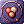 Feeling of the Sun, Moon and Stars |
Salvia resets all three remembered maps for 500,000z. |
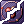 Hatred of the Sun, Moon and Stars |
Salvia separately resets all three remembered targets for 500,000z. |
| Miracle of the Sun, Moon and Stars | 0.1% activation chance under the normal activation conditions. |
| Warmth of the Sun, Moon and Stars | Land Protector does not prevent the Warmth field/damage. Native damage, SP drain and other rules remain. |
Salvia is at prontera 136,200. Each service preserves the other memory set. Empty memory sets are not charged. Baby Star Gladiator variants are also eligible.
Soul Linker¶
| Feature or skill | Current behavior |
|---|---|
| Maximum Job Level | 70 for Soul Linker and Baby Soul Linker; Base Level remains capped at 99. |
| Job EXP | Levels 1-50 retain the existing curve. Requirements for reaching Levels 51-70 use the standard transcendent-class curve. |
| HP/SP after Job 50 | No automatic pool increase from Job Levels 51-70 with the same Base Level, stats, equipment and skills. Existing HP/SP and job-stat tables are retained. |
| Level-5 Soul Links | Ten-minute duration for all 15 classic class Spirit links plus Spirit of Rebirth. Levels 1-4 are unchanged. |
| Eske | Cannot target Boss-flagged monsters, including MVPs and Boss-flagged mini-bosses. Eska is unchanged. |
| Esma | SP costs by level: 4 / 8 / 12 / 16 / 20 / 24 / 28 / 32 / 36 / 40. |
Lupita's explicitly short Super Novice Spirit remains ten seconds. Esma retains its damage, cast time, readiness requirement and other SP modifiers.
Ninja¶
| Skill | Current behavior |
|---|---|
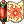 Crimson Fire Blossom / Flaming Petals |
Levels 7-10 cost 30 SP. Levels 1-6 remain 18/20/22/24/26/28 SP. |
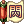 Final Strike / Killing Strike |
Levels 1-10 cost 28 / 30 / 33 / 35 / 38 / 40 / 43 / 45 / 48 / 50 SP: half of the original cost, rounded up. |
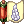 Lightning Spear of Ice / Freezing Spear |
Levels 6-10 cost 30 SP. Levels 1-5 remain 15/18/21/24/27 SP. |
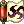 Throw Huuma Shuriken |
12-cell range, 1.5s base after-cast delay, 10/15/20/25/30 SP at Levels 1-5. |
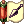 Throw Kunai |
12-cell range and 0.5s base after-cast delay. |
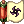 Throw Shuriken |
12-cell range. |
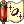 Throw Zeny |
25 SP and 2s base after-cast delay. Half Zeny payment on GvG/castle maps; no Zeny payment in Battlegrounds. |
Throw Zeny's discount changes payment and the affordability cap, not its native randomized damage formula. On WoE maps, the wallet can fund twice its ordinary damage budget before the half-cost payment. Battlegrounds casting/damage works with zero Zeny. Battlegrounds takes precedence if map flags overlap, and fractional Zeny payment is rounded down. There is only one impact-time Zeny charge.
Jackie in Prontera sells the additional Holy, Shadow and Ghost kunai, each with 30 ATK and 0.5 weight. See custom kunai.
Gunslinger¶
| Skill | Current behavior |
|---|---|
| Adjustment | 1 coin, 10 SP, 60-second duration. |
| Flip the Coin | 100% success at all five levels, 1 SP. Retains its 1-Zeny cost, ten-coin cap and normal coin lifetime. |
| Full Buster | After-cast delay capped at 2s. SP cost is 35 at Levels 5-10. See the full curves below. |
| Increasing Accuracy | 2 coins and 15 SP. |
| Madness Canceller | 2 coins and 15 SP. |
| Madness Break | Free platinum skill from the Platinum Skill NPC. Instant, self-only, zero SP/coins, 100ms base action delay. Ends only the caster's active Madness Canceller. |
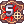 Rapid Shower |
0.75s base after-cast delay, reduced SP and level-based bullet use as listed below. Retains five-hit damage and the revolver requirement. |
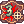 Triple Action |
12 SP. |
Madness Break is available to Gunslinger and Baby Gunslinger. Its permanent NPC grant survives relogging and skill resets; it does not spend skill points.
Per-level costs¶
| Level | Full Buster SP | Full Buster delay (seconds) | Rapid Shower SP | Rapid Shower bullets |
|---|---|---|---|---|
| 1 | 20 | 1.2 | 12 | 1 |
| 2 | 25 | 1.4 | 13 | 1 |
| 3 | 30 | 1.6 | 14 | 2 |
| 4 | 35 | 1.8 | 15 | 2 |
| 5 | 35 | 2.0 | 16 | 3 |
| 6 | 35 | 2.0 | 16 | 3 |
| 7 | 35 | 2.0 | 17 | 4 |
| 8 | 35 | 2.0 | 18 | 4 |
| 9 | 35 | 2.0 | 19 | 5 |
| 10 | 35 | 2.0 | 20 | 5 |
Gunslinger supplies¶
Gunslinger Supplies at prontera 140,200 sells the expanded bullet and sphere catalogue, together with the existing sphere-crafting materials. Catalogue prices and NPC resale values are listed in the dealer guide.
Adopted characters¶
All adopted characters can raise base stats to 99. Native stat-point costs and the available stat-point pool remain; this does not grant free stats or change other adoption penalties.
Independent baby conversion is available through Sister Elara, currently in Prontera. Read the eligibility and permanent Baby Novice restriction before paying.
Related NPC directory¶
| NPC | Location | Service |
|---|---|---|
| Platinum Skill NPC | prontera 128,200 |
Free eligible platinum skills, including Change Cart 2, Super Novice skills and Madness Break; restores applicable existing unlocks. |
| Plagiarism Tutor | prontera 132,200 |
Eligible copies for Rogues/Stalkers, 25,000z per valid lesson. |
| Salvia | prontera 136,200 |
Feeling or Hatred reset, 500,000z per memory set. |
| Gunslinger Supplies | prontera 140,200 |
Expanded ammunition and sphere-crafting supplies. |
| Jackie | prontera 132,196 |
Ninja materials and custom kunai. |
| Gold Point Manager | prontera 144,200 |
Hourly-reward costume shop. |
| Putty | prontera 130,192 |
Card exchange and Bloody Branch rewards. |
| Merchants Warp | prontera 139,171 |
Market Street entry and services. |
| Enhanced Tool Dealers | Original Tool Dealer locations worldwide | Shared everyday-supply catalogue. |
| Sister Elara | Prontera 136,196 (temporary) | Independent baby conversion. |
| Pet Dealers | Original Pet Groomer locations worldwide | Full pet-supply catalogue. |
| Gold Coin Steward | geffen_in 100,174 |
Bag of Gold Coins and the Whitesmith Avarice exchange. |
| Lupita | prt_fild08 166,368 |
Free Super Novice/Super Baby death-count reset and ten-second Spirit link. |
| Enhanced Tool Dealer, Prontera west | prt_in 242,135 |
Full Tool catalogue, including Venom Knives. |
| Enhanced Tool Dealer, Prontera east | prt_in 59,141 |
Full Tool catalogue, including Venom Knives. |
| Enhanced Tool Dealer, Alberta | alberta_in 30,142 |
Full Tool catalogue, including Venom Knives. |
| Enhanced Tool Dealer, Geffen | geffen_in 68,64 |
Full Tool catalogue, including Venom Knives. |
| Enhanced Tool Dealer, Payon | payon_in01 130,62 |
Full Tool catalogue, including Venom Knives. |
| Enhanced Tool Dealer, Aldebaran | aldeba_in 90,58 |
Full Tool catalogue, including Venom Knives. |
| Enhanced Tool Dealer, Rachel | ra_in01 374,69 |
Full Tool catalogue, including Venom Knives. |
| Enhanced Tool Dealer, Lighthalzen | lhz_in02 228,284 |
Full Tool catalogue, including Venom Knives. |